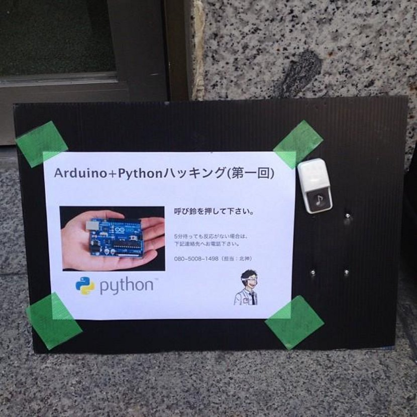
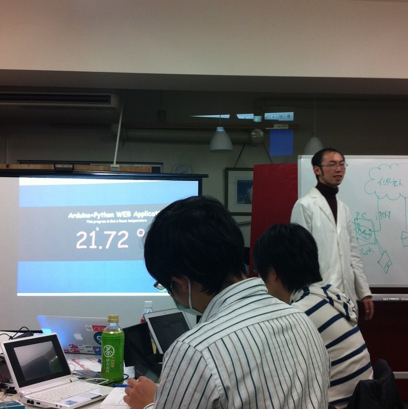
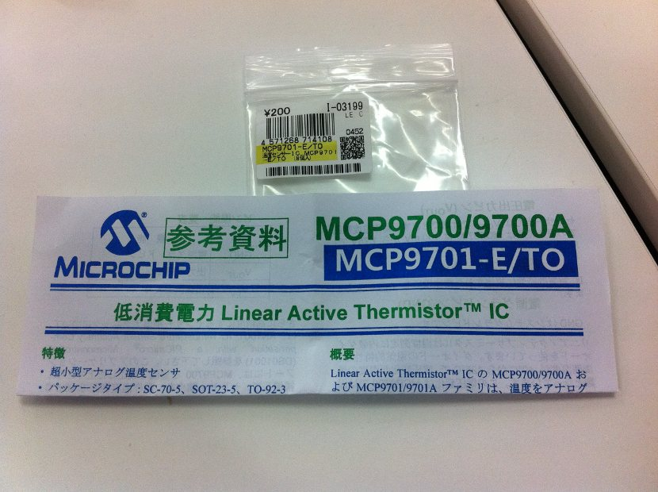
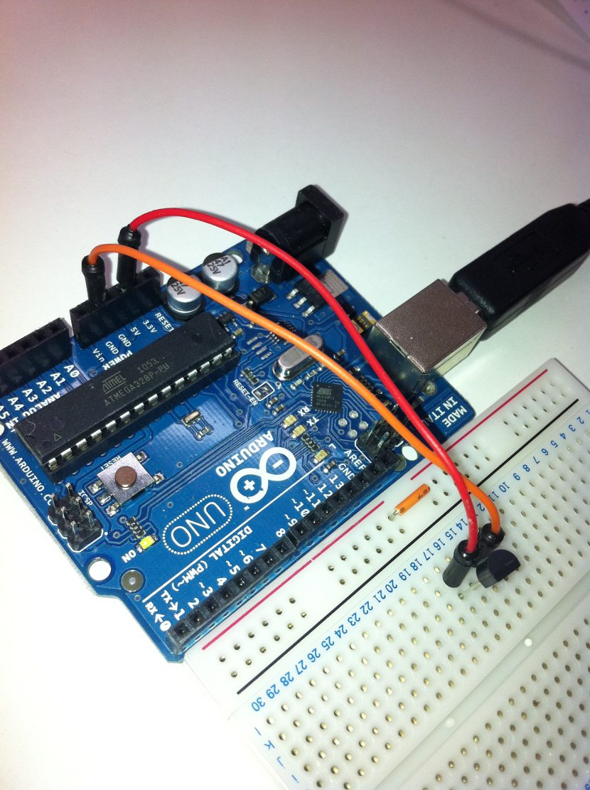
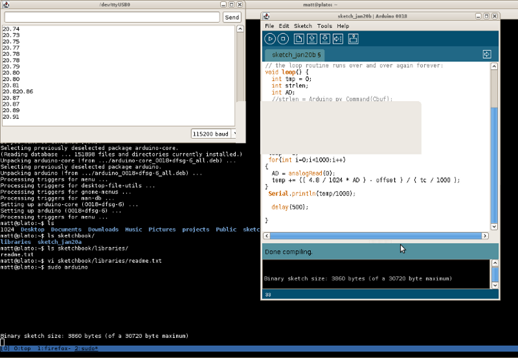

Arduino + Python Meetup
Sun 03 February 2013 by Matt HelmerGeek Fest
 Whenever I'm in the mood for an interesting meetup, I simply fire up the 'ol IT Study Session calendar. If you are a programmer in Japan, this is one of the best resources to learn about tech-related talks, meetups...you name it. The vast majority of the events are in Japanese, but you will probably also find the occasional English language meetup. Being a Python programmer, I am generally interested in Python meetups, but recently I have also been intrigued by the Arduino, an open source microcontroller and related programming environment. Arduino enables one, basically, to program electronics as one sees fit. The sky is the limit (literally).
So, how could I not want to learn something that could potentially result in my own drone copter??
I bought an Arduino Uno some months ago, but not knowing any C code, I kind of stuck it on the shelf and figured I would get around to it eventually. Luckily, I discovered a meetup that would combine Arduino with Python, so I signed up. A day spent programming a micro-controller in Akihabara, center of the geek universe, promised to be the geekiest thing I had ever done, ranking up there with my high school Mathlete days. Arduino did not disappoint.
The items needed were a laptop, Arduino controller and breadboard. Apparently I was also supposed to bring a USB cable to connect my controller to my laptop, but I was able to borrow one from Kitagami sensei.
In preparation for the event, I had to install the Arduino IDE on my laptop. Since my laptop runs Debian Squeeze, I was worried about the installation process, but it turns out the Arduino IDE is now in the Debian package manager. I simply clicked install, entered my password and had a new IDE. Other preparation included downloading the pyserial module, which allows Python to interact with my laptop serial port.
Turn on, Wire in, Read out
 The shindig got started at 10:15am in CERO, a co-working space in Akihabara. Having the event in Akihabara was a great idea, because cheap hardware was/is readily available, affording all of the particpants who forgot their Arduino kits, breadboards, etc. easy access to hardware. Kitagami sensei put on his labcoat to indicate it was time to get to work and proceeded to explain the basics of the microcontroller, noting that the hardware side of Arduino is not so interesting, but things get considerably more exciting on the software side. As it turned out, we were not going to be writing Python code and running it on the Arduino. Arduino development is done in Arduino, using C code. Rather, Python would be used to interact with and utilize the output of our Arduino.
The project of the day was building a simple temperature sensor that would deliver an analog readout to Arduino, convert that to a temperature and tweet the result. There are basically three cheap options for how to measure temperature. One is a semiconductor sensor, or 半導体センサー (はんどうたいセンサー) in Japanese. Another option is a thermocouple, or 熱電対 (ねつでんつい). Thermocouples have a very long history of use, but are apparently more difficult to acquire. The option we used was a thermistor, or サーミスタ, which is quite cheap. It produces variable resistance, depending on the temperature in its surrounding environment. Thermistors cost around 30 yen each. Here is the specific model we used: 
The temperature is measured by the thermistor in degrees Kelvin, so part of the job of the C code was converting to celsius. An example of an interesting use for this project could be monitoring how the temperature of a small room (as one often finds in Japanese apartments) changes when the Nth person enters the room.
As the emphasis of the event was on becoming familiar with Arduino and not C, Kitagami sensei provided us with C code to copy and paste into our Arduino IDE. The gist of the code is reading an analog output from the arduino 1000 times and averaging the value to reach a temperature to report. My understanding is that this is a never-ending loop, so we get regular updates on this sample temperature.
C (and Python) code provided by Kitagami.org
We originally had an error in the C code. The AD value is used to translate analog to digital. We change a wave signal into a serials of numerical samples. Kitagami sensei mentioned that this type of mathematics is called 離散数学(りさんすうがく), which I confirmed to be "dispersion mathematics" in English. The AD (analog to digital converter) value was incorrectly defined as 10, instead of 19.53 mV/deg C. This illustrated how tough hardware can be, as the value of 10 was for a different, but nearly the same, thermistor. We used the MCP9701 thermal sensor. The default Serial rate is 9600 in Arduino. Since the rest of the system would be held up by a slow USB serial connect, we cranked things up to 115,200. Arduino is apparently kind of slow at sampling, but sufficient for our hobbiest purposes. A much faster sample rate would be required for mission critical applications, such as controlling brakes in a car.
The Arduino was rigged using three lines, connecting the ground (GND), power (V_dd from thermistor, 5V) and "analog in" (V_out from thermistor). In the configuration below, electricity is passing vertically, so as long as the lines are in the vertical column corresponding to the correct thermistor plugs, there should be no issues. The breadboard looks like a coordinate system with rows and columns, so it is easy to align things. 
I had some serious issues getting my laptop to compile the C code in the Arduino IDE. I spent probably 1/3 of my time at the meetup trouble-shooting, before eventually getting things to work, although not with my Arduino Uno. Kitagami sensei lent me an older Arduino board, called the Duemilanove. I ran the command 'sudo arduino' to bring up my IDE, selected "Duemilanove" as my board type, and changed the baud rate to 115,200. Of course, there was a lot of time spent toying around before I got it actually working. The code compiled and I had a stream of output. For interested parties, there is a summary of issues faced by Debian users here 
API Voodoo
Now that we had our C code working and the arduino was spitting out a continuous temperature update, it was time to get some Python code interacting with the serial module. Data was received from '/dev/ttyUSB0', which is where the Arduino hookup was mounted via USB. The Twitter API (thanks, Google!) then enabled us to post the temperature on twitter. You can see the result here:
sup y'all, current temperature in Akihabara is20.32
— matt helmer (@metahikari) January 20, 2013
Wrap up
I had a lot of fun at this event. Arduino is a very flexible tool, both in terms of functionality and educational value. Kitagami sensei, bubbling with enthusiasm for Arduino, reminded me of my semi-absent-minded, but very fun high school physics teacher. I hope to attend future events, as there was talk of incorporating Raspberry Pi into the Arduino mix.
Of the 30 or so people who showed up, probably 26 were Apple users. As such, the recommended preparation for the event was not really adequate for Linux users. I should have done more homework in advance, as that could have prevented me from wasting an hour of trouble shooting. I suppose next time I will need to do more preparation to ensure my hardware is compatible with my OS, but that's not such a big deal and is really my own fault.
All in all, it was a good day and I learned about some new topics while getting my hands dirty with a little C code.